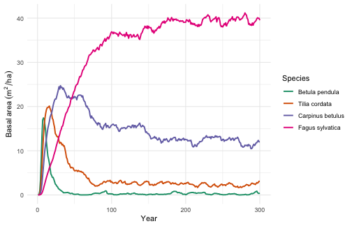
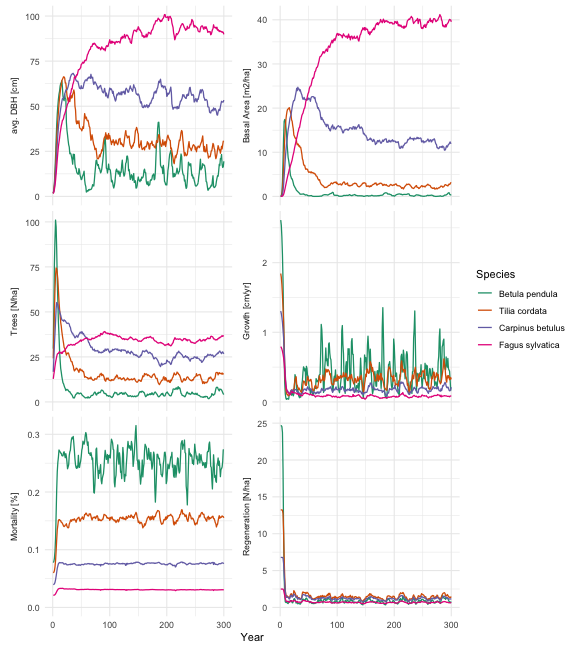

Plausible succession from a handful of species
Source:vignettes/B-Succession_demo.Rmd
B-Succession_demo.RmdFINN encodes regeneration, growth, mortality and competition as ecological processes. Here we give it nothing but four species with contrasting life-history strategies and let it simulate succession on bare ground — to show that ecologically sensible dynamics emerge from the demographic trade-offs alone. No data, no fitting.
library(FINN)
library(data.table)
library(ggplot2)
FINN.seed(1234)
Ntimesteps <- 300
Nsites <- 1
Nsp <- 4 # pioneer -> early-mid -> mid-late -> climax
patch_size <- 0.1The species and their trade-offs
We place four species along a classic life-history axis, from a fast, light-demanding pioneer to a slow, shade-tolerant climax species. Every parameter below encodes one end of a trade-off.
The single most important lever is the shade
parameter (parGrowth[,1] and parReg).
In FINN this is the fraction of light a species needs: growth and
regeneration are gated by a sigmoid centred on
light = shade, so a species only performs where
light > shade. A high value therefore
means light-demanding (a pioneer that needs open ground); a
low value means shade-tolerant (a climax
species that establishes under a closed canopy).
# shade = light fraction a species needs to grow / regenerate
# high -> light-demanding (pioneer); low -> shade-tolerant (climax)
shadeSP <- c(0.60, 0.42, 0.25, 0.08) # sp1 pioneer ... sp4 climax
# --- regeneration ----------------------------------------------------------
# light threshold tracks shade tolerance; overall seed rain set by the
# regeneration intercept (pioneer prolific, climax sparse but persistent).
parReg <- shadeSP
parRegEnv <- list(matrix(c(
c(3.2, 2.6, 2.0, 1.2), # intercept: overall regeneration effect size
rep(0, Nsp) # env slope = 0 (we hold the environment constant)
), Nsp, 2))
# --- growth ----------------------------------------------------------------
# col 1 = shade threshold (as above); col 2 = size-dependent growth decay.
parGrowth <- matrix(c(
shadeSP,
c(0.040, 0.038, 0.034, 0.030)
), Nsp, 2)
# growth-rate intercept: the pioneer grows ~4x faster than the climax, so it
# seizes the early canopy; the climax builds slowly.
parGrowthEnv <- list(matrix(c(
c(1.00, 0.65, 0.30, -0.20),
rep(0, Nsp)
), Nsp, 2))
# --- mortality -------------------------------------------------------------
# Mortality is mort = plogis(intercept + col1*light + col3*growth), so it
# changes through the run as light and growth change:
# col1 (light): negative -> mortality RISES as a cohort is overtopped (low
# light). Steep for the pioneer (shade-intolerant), ~flat for
# the climax (shade-tolerant).
# col3 (growth): negative -> suppressed, slow-growing trees die more (vigour).
# col2 (dbh): left 0.
parMort <- matrix(c(
c(-1.0, -0.8, -0.5, -0.3), # col1 light: pioneer strongly shade-intolerant
rep(0, Nsp), # col2 dbh: off
c(-0.3, -0.3, -0.3, -0.3) # col3 growth: vigour lowers mortality
), Nsp, 3)
parMortEnv <- list(matrix(c(
c(-0.69, -1.40, -2.30, -3.30), # intercept: per-species baseline level
rep(0, Nsp)
), Nsp, 2))
# --- competition -----------------------------------------------------------
# col 1 = height allometry (the climax is tallest and overtops late);
# col 2 = competition strength.
parComp <- matrix(c(
c(0.50, 0.55, 0.62, 0.70),
c(0.30, 0.25, 0.20, 0.15)
), Nsp, 2)Collected into one table, the trade-offs read across the life-history axis:
pars_dt <- data.table(
species = c("1 pioneer", "2 early-mid", "3 mid-late", "4 climax"),
shade = shadeSP,
growth_rate = round(exp(parGrowthEnv[[1]][, 1]), 2), # relative growth speed
mort_shaded = round(plogis(parMortEnv[[1]][, 1]), 3), # mortality when overtopped (light~0)
shade_intol = -parMort[, 1], # how much mortality rises in shade
seed_rain = round(exp(parRegEnv[[1]][, 1]), 1), # relative fecundity
height_allom = parComp[, 1]
)
pars_dt
#> species shade growth_rate mort_shaded shade_intol seed_rain height_allom
#> <char> <num> <num> <num> <num> <num> <num>
#> 1: 1 pioneer 0.60 2.72 0.334 1.0 24.5 0.50
#> 2: 2 early-mid 0.42 1.92 0.198 0.8 13.5 0.55
#> 3: 3 mid-late 0.25 1.35 0.091 0.5 7.4 0.62
#> 4: 4 climax 0.08 0.82 0.036 0.3 3.3 0.70Reading the rows: the pioneer needs the most light
(shade 0.60), grows fastest (growth_rate ≈
2.7), is the most shade-intolerant (shade_intol highest, so
its mortality climbs steeply once overtopped — mort_shaded
≈ 0.33) and seeds most prolifically; the climax is the mirror image —
shade-tolerant, slow, almost immortal even in deep shade
(mort_shaded ≈ 0.035), sparse but steady — and the tallest,
so it ultimately overtops.
A constant environment
To isolate the trade-offs we hold the environment constant
(env1 = 0) and run primary succession from bare ground with
no disturbance — so any dynamics come from the species themselves, not
from the environment.
env_dt <- data.table(expand.grid(siteID = 1:Nsites, year = 1:Ntimesteps))
env_dt$env1 <- 0 # constant -> succession is driven by the traitsSimulate succession
m <- finn(
N_species = Nsp,
competition_process = createProcess(~0, FINN::competition),
growth_process = createProcess(~1+env1, FINN::growth, initSpecies = parGrowth, initEnv = parGrowthEnv),
regeneration_process = createProcess(~1+env1, FINN::regeneration, initSpecies = parReg, initEnv = parRegEnv),
mortality_process = createProcess(~1+env1, FINN::mortality, initSpecies = parMort, initEnv = parMortEnv)
)
sim <- predict(m, init_cohort = NULL, env = env_dt, disturbance = NULL,
patches = 100, device = "cpu")
# average over patches; convert per-patch ba/trees to per-hectare
p_dat <- sim$long$site[, .(value = mean(value)), by = .(year, species, variable)]
p_dat[variable %in% c("ba", "trees"), value := value / patch_size]
sp_labs <- c("1 pioneer", "2 early-mid", "3 mid-late", "4 climax")The successional pattern
ba <- p_dat[variable == "ba"]
ggplot(ba, aes(year, value, colour = factor(species))) +
geom_line(linewidth = 0.9) +
scale_colour_viridis_d(name = "Species", labels = sp_labs) +
labs(x = "Year", y = expression(Basal~area~(m^2/ha))) +
theme_minimal()
Basal area by species over time. The pioneer peaks within the first decade and collapses; mid-seral species crest in turn; the shade-tolerant climax rises slowly and dominates the mature stand.
The same run, across every state variable FINN tracks — diameter, basal area, tree numbers, growth, mortality and regeneration:
panel <- copy(p_dat)
# regeneration is shown as the mean per hectare (r_mean_ha); the per-patch
# count (reg) is dropped.
panel[, variable2 := factor(
variable,
levels = c("dbh", "ba", "trees", "AL", "growth", "mort", "r_mean_ha"),
labels = c("avg. DBH [cm]", "Basal Area [m2/ha]", "Trees [N/ha]",
"Available Light [%]", "Growth [cm/yr]", "Mortality [%]",
"Regeneration [N/ha]"))]
ggplot(panel[!is.na(variable2)], aes(year, value, colour = factor(species))) +
geom_line(linewidth = 0.6) +
facet_wrap(~variable2, scales = "free_y", ncol = 2, strip.position = "left") +
coord_cartesian(ylim = c(0, NA)) +
scale_colour_viridis_d(name = "Species", labels = sp_labs) +
labs(x = "Year", y = NULL) +
theme_minimal() +
theme(strip.placement = "outside",
strip.text.y.left = element_text(angle = 90),
axis.title.y = element_blank())
Succession across all FINN state variables for the four species.
What just happened
The figure traces textbook succession, and every feature maps back to a parameter:
-
The pioneer (species 1) erupts and collapses. On
open ground light is abundant, so its high light requirement is met; its
fast growth and prolific seeding let it seize the canopy within the
first decade. But as the canopy closes, light drops below its high
shadethreshold — it can no longer regenerate — and because it is shade-intolerant its mortality climbs steeply once overtopped (visible in the mortality panel: from ~0.08 yr⁻¹ in full light to ~0.3 yr⁻¹ in shade), clearing the standing trees. By mid-succession it is essentially gone. - The early- and mid-seral species crest in turn. Species 2 and 3 have progressively lower light requirements and lower mortality, so each peaks a little later and lingers a little longer. The mid-late species holds a stable subdominant presence through the middle of the run.
-
The climax (species 4) inherits the stand. It grows
slowly and seeds sparsely, so early on it is barely visible. But it
regenerates under shade (lowest
shade), is shade-tolerant so it barely dies even when overtopped (mortality stays ~0.02–0.03 yr⁻¹ throughout), and is the tallest (highestheight_allom) — so once the early-seral canopy senesces it overtops everything and dominates the mature forest.
None of this was prescribed: we set demographic trade-offs for four species and FINN produced the successional turnover.
sessionInfo()
#> R version 4.5.0 (2025-04-11)
#> Platform: aarch64-apple-darwin20
#> Running under: macOS 26.5.1
#>
#> Matrix products: default
#> BLAS: /Library/Frameworks/R.framework/Versions/4.5-arm64/Resources/lib/libRblas.0.dylib
#> LAPACK: /Library/Frameworks/R.framework/Versions/4.5-arm64/Resources/lib/libRlapack.dylib; LAPACK version 3.12.1
#>
#> locale:
#> [1] C
#>
#> time zone: Europe/Berlin
#> tzcode source: internal
#>
#> attached base packages:
#> [1] stats graphics grDevices utils datasets methods base
#>
#> other attached packages:
#> [1] ggplot2_3.5.2 data.table_1.17.8 FINN_0.1.0
#>
#> loaded via a namespace (and not attached):
#> [1] vctrs_0.6.5 cli_3.6.6 knitr_1.50 rlang_1.2.0
#> [5] xfun_0.57 processx_3.8.6 generics_0.1.4 torch_0.15.1
#> [9] coro_1.1.0 labeling_0.4.3 glue_1.8.0 bit_4.6.0
#> [13] ps_1.9.1 scales_1.4.0 grid_4.5.0 evaluate_1.0.5
#> [17] tibble_3.3.0 lifecycle_1.0.5 compiler_4.5.0 dplyr_1.1.4
#> [21] RColorBrewer_1.1-3 Rcpp_1.1.0 pkgconfig_2.0.3 farver_2.1.2
#> [25] viridisLite_0.4.2 R6_2.6.1 tidyselect_1.2.1 pillar_1.11.0
#> [29] callr_3.7.6 magrittr_2.0.3 withr_3.0.2 tools_4.5.0
#> [33] bit64_4.6.0-1 gtable_0.3.6